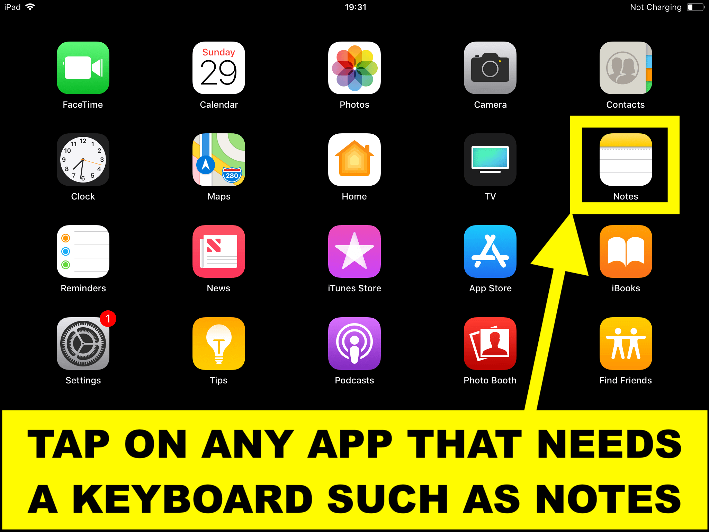
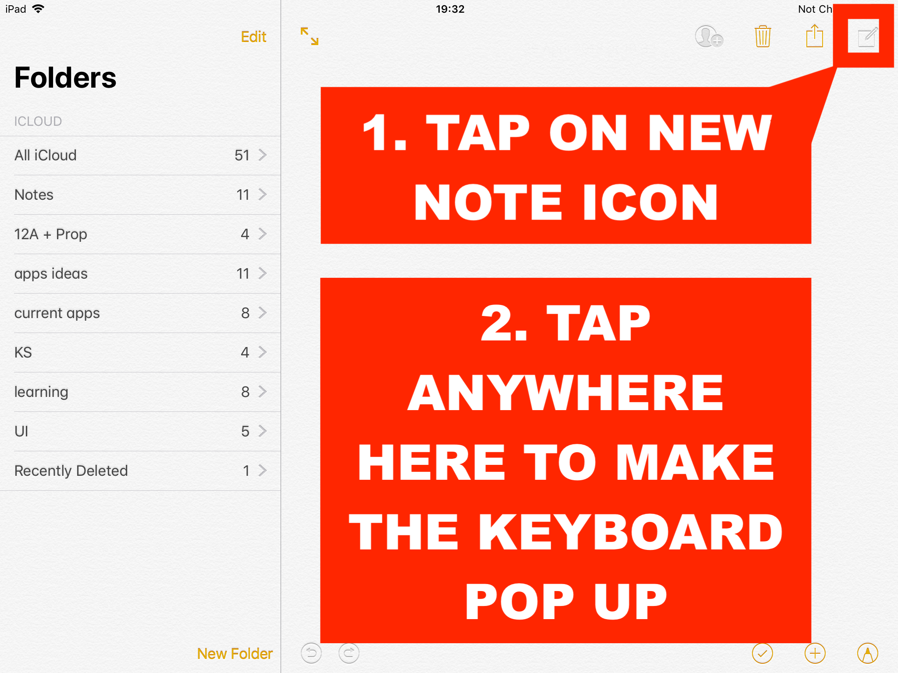
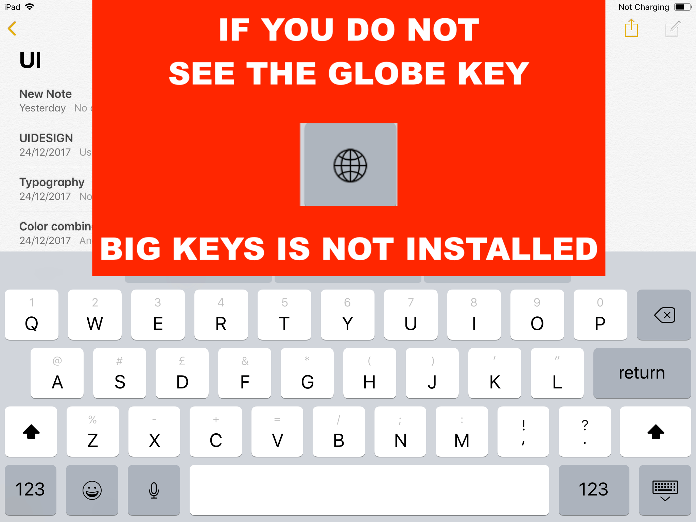

Follow these simple steps to verify if the Big Keys keyboard app is installed on your device.
Step 1: Open an App That Requires a Keyboard
Tap on any app that requires a keyboard, such as Apple Notes.

Step 2: Start a New Note
Tap the New Note icon in the upper-right corner. A new note will appear. Tap anywhere on the note to display the default keyboard.

Step 3: Check for the Globe Icon
If you do not see a globe icon on the keyboard, no third-party keyboards are installed, including Big Keys. Please install Big Keys by following the installation instructions.
